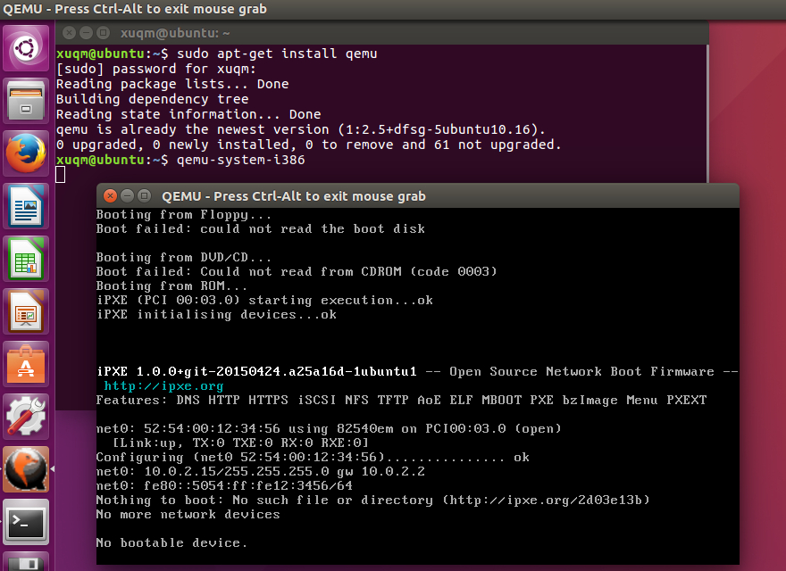
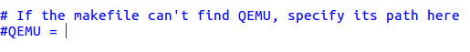

1 说明
- Xv6是一个Intel x86平台下的类Unix教学操作系统，最新源码获取地址为https://github.com/mit-pdos/xv6-public
- 运行xv6可以用qemu和bochs，本文介绍在Ubuntu系统下用qemu运行的方式。
- 本文包括qemu的安装步骤、编译并运行Xv6的步骤、Xv6编译生成物的说明以及使用不同CPU数量运行Xv6系统的方法。
2 安装qemu
直接使用apt-get安装即可,即输入：1
sudo apt-get install qemu
然后输入qemu-system-i386，如果弹出qemu即表明安装成功：

3 编译xv6
3.1 解压下载好的xv6-master.zip文件
3.2 进入解压好的xv6-master目录下，并输入make命令进行编译
3.3 编译结束后可能会出现以下错误
这是因为static_assert重定义了，到xv6的解压文件下找到mkfs.c，注释掉这句代码，保存然后重新make一下即可。如图：
3.4 编译成功后如下图所示
4 用qemu运行xv6
4.1 在xv6-master目录中找到并打开Makefile文件;
4.2 在“QEMU=”后面填写qemu-system-i386，并删掉前面的“#”;

完成后应如下图所示：
4.3 进入xv6-master目录下，并输入make qemu，如下图
Xv6运行成功。
注：如果输入
make qemu后出现以下错误
说明qemu在Makefile中未配置正确，检查是否删掉QEMU前的“#”，重新执行第2步。
4.4 也可以通过在命令行中输入qemu命令的方式来运行xv6系统。
事实上，输入make qemu等价于输入“qemu-system-i386 -serial mon:stdio -hdb fs.img xv6.img -smp 2 -m 512”qemu-system-i386即表示在x86平台下运行-hdb命令是系统要加载的第二个镜像文件-hda是第一个，可省略不写-smp是选择要用几个核来执行此系统-m是指给此系统分配的内存大小
如图：
5 编译生成物的说明
xv6系统编译成功后，主要生成了xv6.img和fs.img这两个img文件。
5.1 根据Makefile 84-87行
1 | xv6.img: bootblock kernel fs.img |
可以看出，bootblock和kernel都被加入到了xv6.img中，即xv6.img包含启动块和内核文件。
5.2 根据Makefile 159-177行
1 | UPROGS=\ |
可以看出fs.img包含了Unix系统的一些常用命令，故而猜测xv6.img和fs.img一起运行可以使xv6系统使用这些Unix命令。
6 用不同CPU数量启动xv6
6.1 单核
在命令行中输入1
qemu-system-i386 –serial mon:stdio –hdbfs.imga.img –smp 1 –m 512
（上文说过，smp命令即可指定CPU个数，故个数为1即为单核）
输入后执行，如图所示：
6.2 双核
将smp的1改为2，执行。如图：